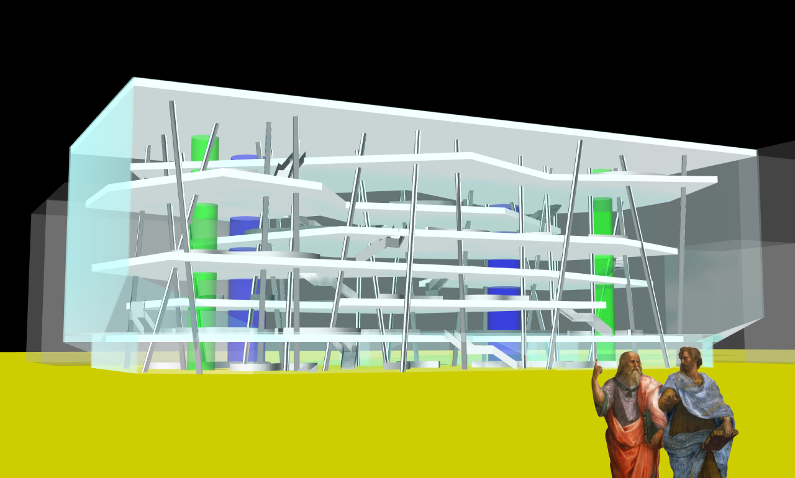
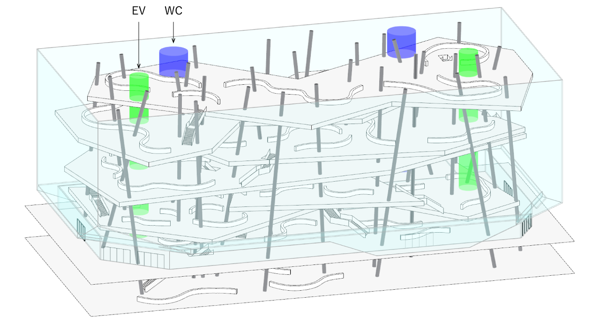
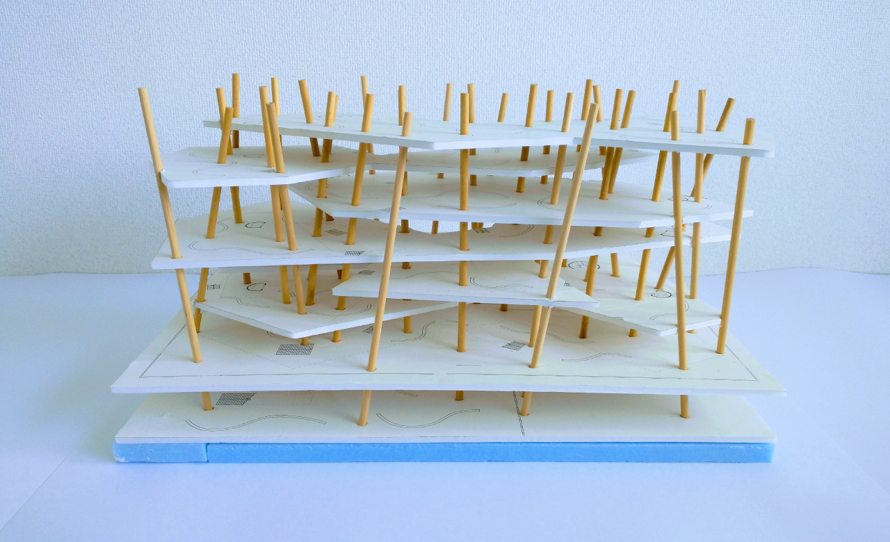
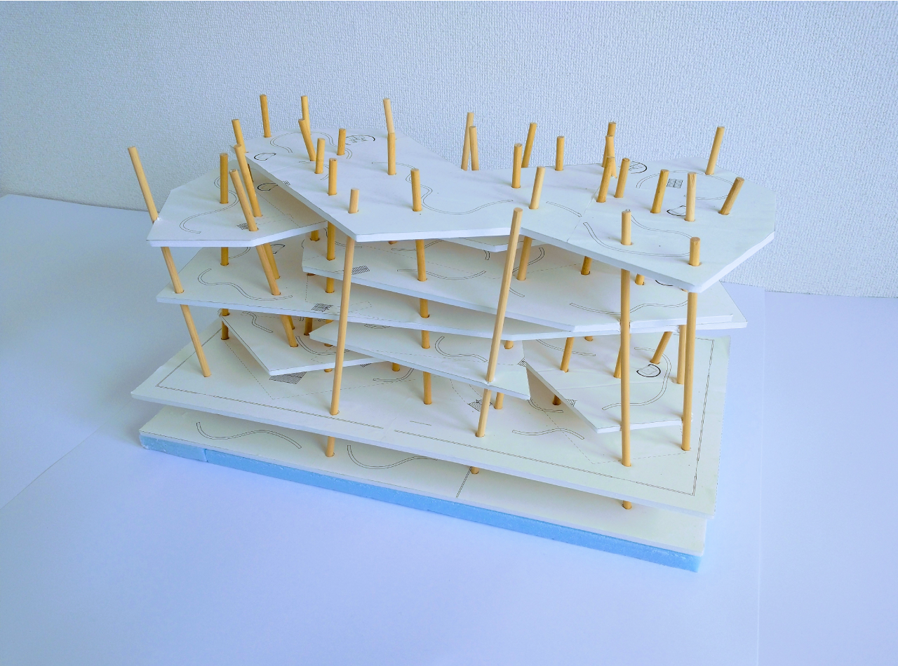

卒業設計
String Library



●コンセプト
インターネットの発展と普及により得たい情報がすぐにピンポイントで得られるようになった。
またSNSによっていつでもどこにいても人とつながることが可能となった。
しかし同時にいくつかの大きな問題も生じている。
ネットではその構造上、得たい情報しか得られない。
従ってネットでは、予期していなかった未知と遭遇する、知の体系のダイナミックな広がりを体感するといったことはし難い。
また特にSNSでは閉じたコミュニティ内である意見が過剰に増幅され（エコーチェンバー現象）、利用者が他者にたいして不寛容になったり危害を加えたりする事態につながるリスクがある。
以上ようなの背景から卒業設計では札幌市立中央図書館の新築移転計画として、来訪者が知のダイナミックな広がりを身体で感じたり予期していない発見をすることができ、人と人が真につながるための出発点となるような次世代型の図書館を設計した。
●ダイアグラム
書架の形状を問い直すところから設計を始めた。
従来の書架は最小の床面積に最多の本を所蔵すること、そして検索のし易さを高めることに重点を置いた列型の配置となっている。
ここでまず、諸分野の図書分類法に則った連続性を強調するため、従来の列型の書架を一本の長い線形のものにする。
次に書架にうねりを加える。
こうすることにより分野間の『飛び』や『飛躍』のきっかけが作られ、『ノイズ』が生まれる。
『飛び』や『飛躍』あるいは『ノイズ』に出会った来訪者ははじめ戸惑う。
しかし本棚に沿って歩くことにより、来訪者は一見無関係に見える分野間につながりを見出す。
このつながりこそが人と人の相互理解・対話の礎となる。
なお以上のダイアグラムの着想は遺伝情報を伝達するRNAの内部に時々水素結合が作られるさまから得ている。
●建築化
建築を具体的に作るに当たり、長い書架を如何にして敷地内に収めるかが問題となる。
そこでまずプログラムを用いて意図する長さの書架（今回の場合1km）を敷地平面上に生成した。
次にフロアや『飛び』を意識しながら書架を手動で垂直方向にほぐした。
こうして書架の形状が決まった。
書架の形状に合わせて不整形のスラブを挿入した。
吹き抜けを介して上下方向の気配のやり取りが生まれることを意図している。
ランダムな傾きのある柱を採用した。
森の木々のようなランダムネスが心地よさを生むこと、そして柱が剛床と共に建物全体の水平剛性を高めることを意図している。

●データ
| 所在地 | ：北海道札幌市大通 |
| 主要用途 | ：図書館 |
| 書架長さ | ：947.3 m |
| 所蔵能力 | ：18.9万冊 |
| 主体構造 | ：鉄骨造 |
| 敷地面積 | ：5,124 ㎡ |
| 建築面積 | ：4,800 ㎡ |
| 延床面積 | ：22,590 ㎡ |
| 規模 | ：地下1階, 地上7階 |
| 設計期間 | ：2022.04-2023.04 |